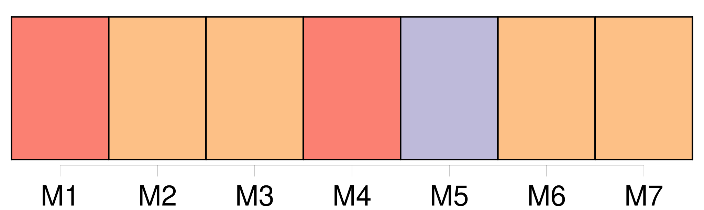
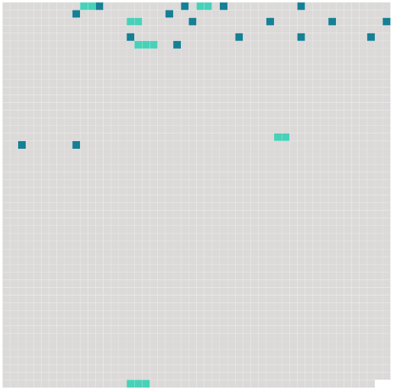

Longueur nb maillons : 23 mentions |
 |
On nous a envoyé de la ville notre dîner et [un serviteur] [qui] restera avec nous tout le temps de notre quarantaine. [C'] est [un vieillard] , [Luigi] , tout petit, avec des cheveux blancs. [Il] a des yeux bleus dont le regard passe tour à tour de la gaieté à la tristesse, comme s' [il] voulait nous plaindre et nous ranimer en même temps. Quand [il] est entré, j'avais le visage couvert avec un mouchoir, et je n'ai pas seulement levé les yeux, tant j'étais fatiguée de voir tous ces hommes avec leurs chapeaux retroussés, leurs cocardes, leurs baïonnettes, etc. [Pauvre Luigi] , je me souviendrai longtemps de [sa] voix pleine de larmes et de tendresse, quand [il] vit que je refusais de dîner. [Il] regarda au ciel, en élevant [ses] mains, dans quelque prière qui demandait à Dieu de me consoler. [2 phrases] “ On a tiré les verrous d'une autre porte, et l'on a donné à [Luigi] un logement à part, à côté de nous. Maintenant, qu' [il] est entré dans notre chambre et qu' [il] a touché ce que nous avons touché, [il] est devenu pour eux tous un objet de terreur.
Que de fois, dans une seule journée, [ce pauvre vieillard] monte et [redescend] nos vingt marches roides, presque perpendiculaires, pour nous procurer ce qui nous est nécessaire, ou pour nous apporter quelque soulagement! [24 phrases] Fait la lecture pour lui — Écouté Anna — Rangé, mis tout en ordre ; [notre Luigi] nous a apporté un élégant bouquet de jasmins, de géraniums et d'œillets. [Il] sait faire des soupes excellentes. [Il] fait tout cuire sur du charbon, dans une petite marmite. [67 phrases] William, avec une couverture sur ses épaules, se traîne vers le feu de [notre vieux serviteur] ; Anna saute à la corde, et Mme Élisabeth fait cinq ou six fois de suite le tour de la chambre, en sautant sur un pied. |
 |
Il est possible de télécharger la ressource sur la page Ortolang |
Si vous avez des questions ou vous voyez des erreurs, merci d'envoyer un mail à silvia.federzoni89@gmail.com |